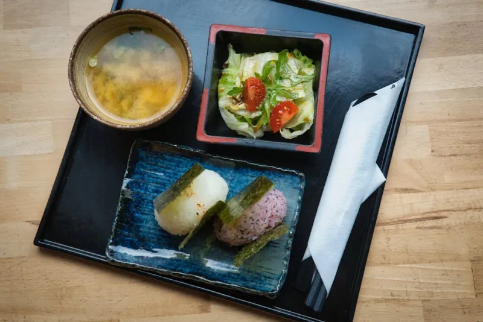
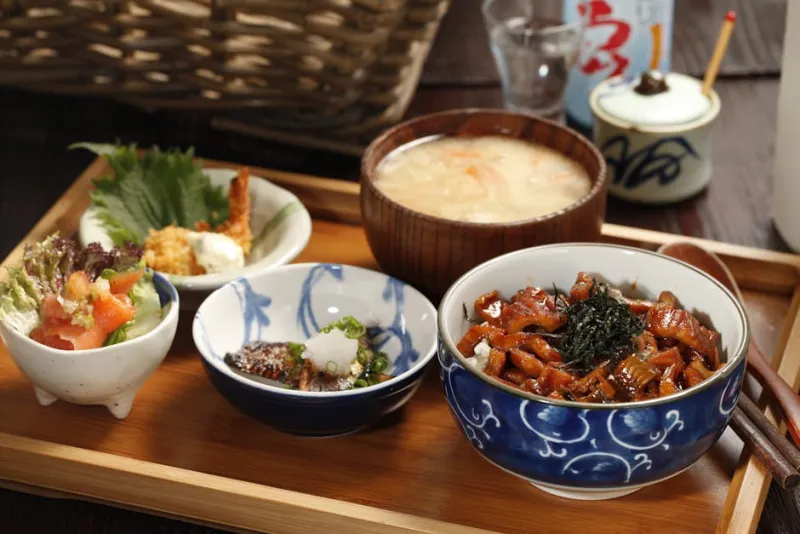
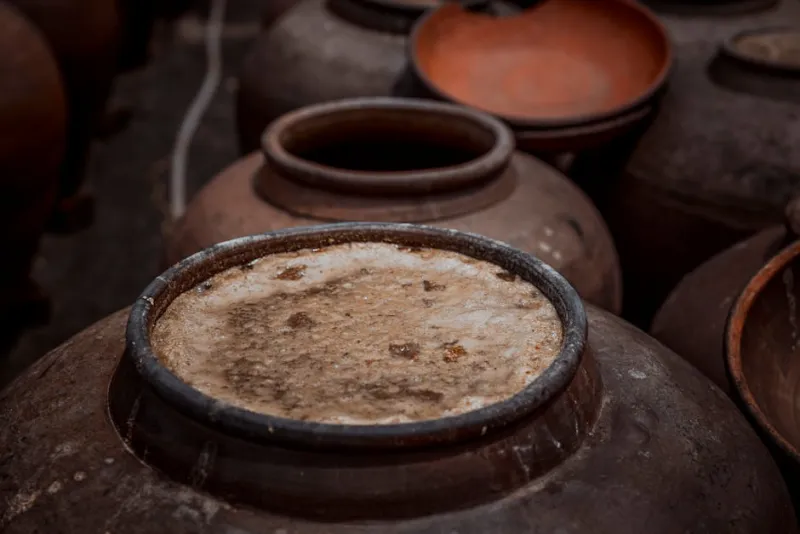
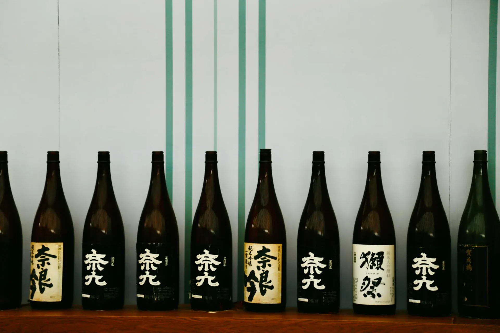

Signature Ferments
Each product is produced in small batches, available by pre-order. Fermentation times range from 48 hours to 18 months. Every jar carries the living intelligence of Aspergillus oryzae and four centuries of practice.

A living paste of koji rice, sea salt, and water — aged for a minimum of 10 days until the enzymes reach peak activity. The essential marinading tool of Japanese cuisine: tenderizes proteins, accelerates umami development, and replaces salt in every application.

A thick, non-alcoholic rice beverage produced by fermenting steamed rice with fresh koji at a controlled 55–60°C over 8 hours. Naturally sweet through enzymatic starch conversion alone — no sugar added. Rich in B vitamins, amino acids, and digestive enzymes.
Produced from heirloom Shirotsuru barley and organic soybeans inoculated with our Kyushu-style koji strain. Aged for a minimum of 18 months in cedar barrels. The flavor is simultaneously sweet, earthy, and complex — a profile that deepens for years in the jar.

The pressed lees remaining after sake pressing — soft, fragrant, and dense with amino acids. Use as a pickling medium for fish and vegetables, as a soup enricher, or blended into sauces. Each batch carries the aromatic profile of its parent sake mash.
An extraordinary marriage of our shiro shoyu — brewed from 90% wheat and 10% soy — with fresh koji paste. The result is a luminous, amber-gold sauce with intense umami, floral sweetness, and none of the harsh salinity of standard soy. Available in very limited quantities.
Our freshly harvested rice koji — the living foundation of all fermentation. Fully colonized Koshihikari rice with visible white mycelium and the characteristic chestnut-sweet fragrance of peak enzyme activity. Use immediately to make your own shio koji, miso, or sake at home.

Mugi Miso — 18 Month Reserve
Our signature product is the mugi miso aged for a minimum of eighteen months in century-old cedar barrels salvaged from a decommissioned brewery in Kumamoto. Time is the primary ingredient.
The flavor profile shifts markedly from the fresh version at six months: where the young miso is bright and slightly sweet, the reserve carries notes of dark caramel, roasted grain, deep earth, and a sustained umami finish that can persist for minutes on the palate.
The Living Calendar
Koji follows the seasons. Temperature and humidity shifts through the year produce distinct enzyme profiles, flavors, and fermentation characters. Our seasonal releases celebrate these natural variations.
Sakura Shio Koji
Cherry blossom petals salt-preserved and folded into fresh shio koji — a fleeting, floral marinade available for two weeks only in late March.
Shochu Kasu
The lees of summer-pressed sweet potato shochu — fiery, aromatic, and extraordinary as a cure for oily fish such as mackerel or amberjack.
Kuri Amazake
Fresh mountain chestnuts sourced from Tamba blended into our amazake base — a seasonal drink of extraordinary sweetness and earthen depth.
Yuzu Miso
Aged mugi miso blended with freshly pressed yuzu zest — a condiment of fierce fragrance and deep umami for winter nabe and hot pot preparations.
Pairing Principles
| Product | Primary Application | Flavor Profile | Chef's Note |
|---|---|---|---|
| Shio Koji | Protein marinade, curing, seasoning | Saline, sweet, mellow umami | Substitute 1:1 for salt in any marinade. Allow 3–7 days for optimal enzyme penetration. |
| Amazake | Beverage, dessert base, glaze | Sweet, creamy, lightly fermented | Reduce by half and use as a lacquer on roasted vegetables or as a frozen dessert base. |
| Mugi Miso | Soups, braises, butter enrichment | Earthy, complex, sustained umami | A half-teaspoon in beef bourguignon transforms the dish. Never boil after adding — heat kills enzymes. |
| Sake Kasu | Pickling, poaching, grilling plank | Alcoholic, floral, rich amino acids | Wrap fatty fish in kasu and bake at 180°C — the lees crust caramelizes, the flesh cures simultaneously. |
| Shiro Shoyu Koji | Finishing sauce, dressings, glazes | Delicate, sweet, intense umami | Never cook. Use only as a finishing element — a few drops over raw seafood or on cold tofu is revelatory. |
| Kome Koji | DIY fermentation, enzyme bath, curing | Nutty, chestnut-sweet, earthy | Blend fresh koji with cream cheese for an immediate umami spread that rivals aged varieties. |